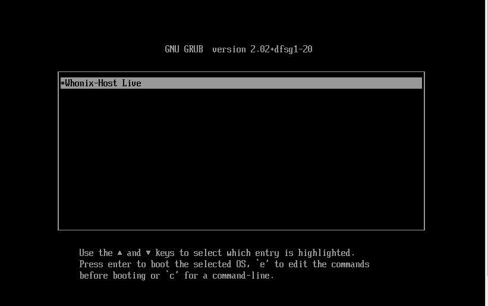
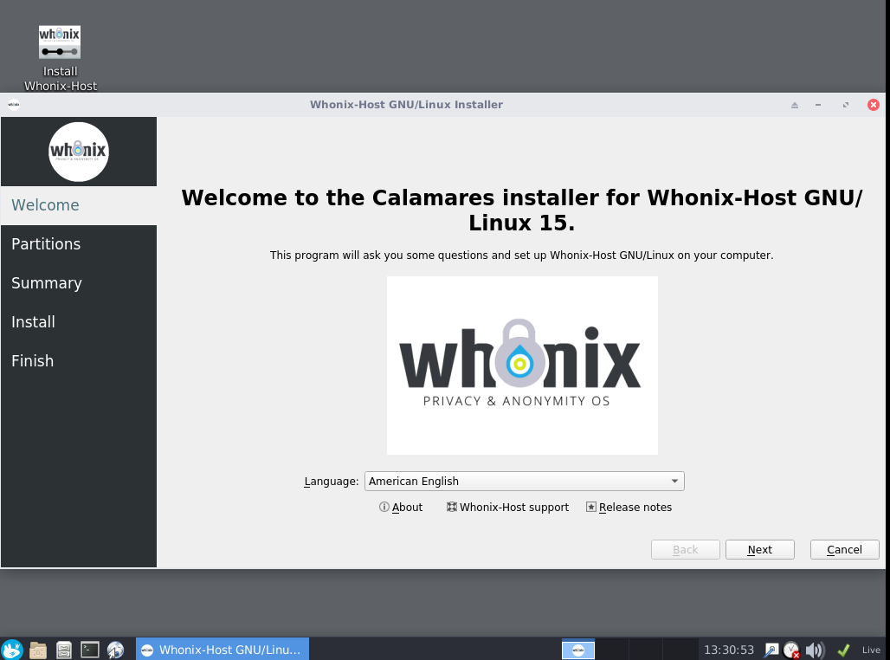
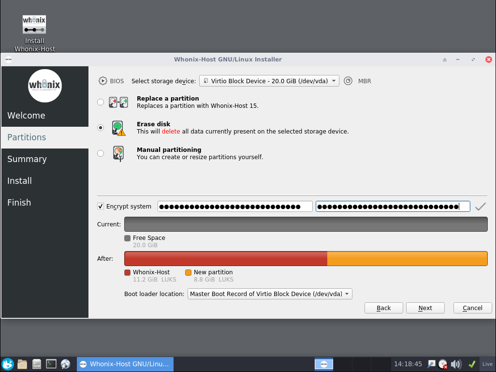
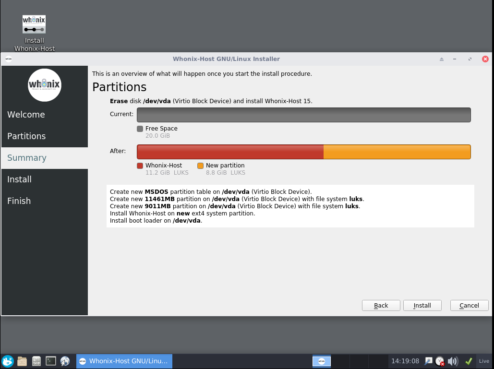
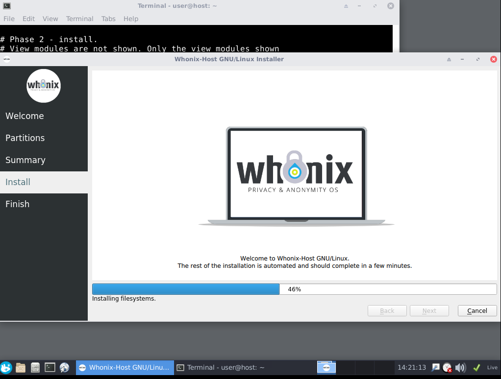
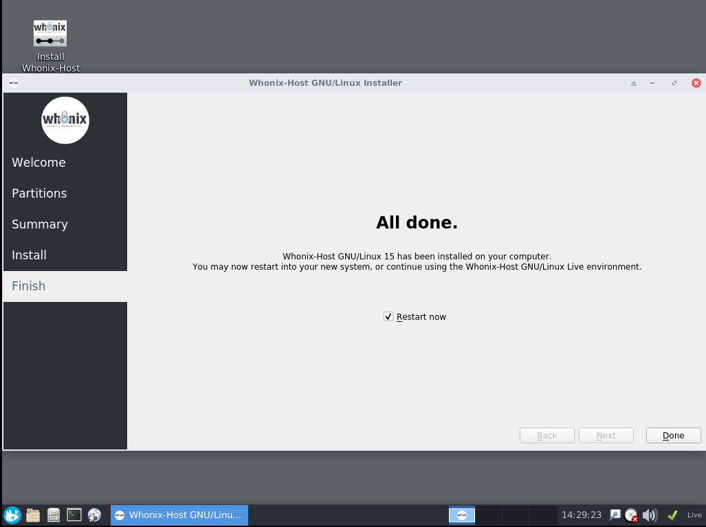
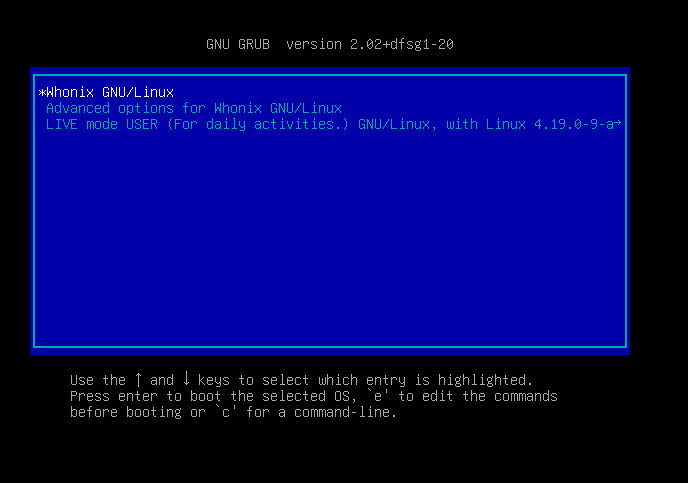

We believe security software like Whonix needs to remain Open Source and independent. Would you help sustain and grow the project? Learn more about our 14 year success story and maybe DONATE!
Whonix-Host Operating System Live ISO, Whonix-Host Installer

Whonix-Host will be a complete Operating System provided by Whonix developers. More developers still wanted! Not available for users yet. Users should install Whonix instead, it's available for most major operating systems.
- Help wanted! : A Whonix-Host Operating System Live ISO and Whonix-Host Installer is currently in development. More developers are still wanted!
- Not available for users yet : There is no ETA (estimated time of arrival) yet. Users should install Whonix instead.
- Live Mode : Looking for Whonix Live Mode? It's already available, see Live Mode.
- USB : Want to use Whonix on USB? See USB Installation.
- Name discussion : "Whonix-Host" might not be a good name and might be renamed in the future. You have an opinion? Participate in this forum discussion.
General Disclaimer
DO NOT USE THIS YET AS A USER!
There is no ETA (estimated time of arrival) yet.
Important warning: Whonix-Host is experimental software and still in early development. It is currently missing some core features, such as a working firewall on the Host, and is not yet ready for production use, nor intended for end-users.
This wiki page is a preview for developers and curious readers only.
Whonix-Host
Developers-Only Preview Version 15.0.1.2.7 Released!
Major missing features in the initial release include:
progress:
- 2024:
 Kicksecure ISO was made available for testers. (Whonix is based on
Kicksecure.) Kicksecure is
is based on Debian
Kicksecure ISO was made available for testers. (Whonix is based on
Kicksecure.) Kicksecure is
is based on Debian trixie,
dracut, compatible with BIOS, EFI booting, and even
Secure Boot compatible. - 2025: Stable release of Kicksecure.
See also Dev/Project Host.
Help welcome!
What is Whonix as a host operating system?
Whonix as a host operating system (OS) is a complete Operating System provided by Whonix developers, specifically designed to run Whonix virtual machines ("Whonix-Gateway" and "Whonix-Workstation").
Based on Kicksecure, Whonix as a host OS comes out-of-the-box with all Kicksecure™ security features and ready-to-use, pre-installed Whonix virtual machines.
By default, Whonix as a host OS runs from a USB flash drive as a Live ISO, like any modern Linux distribution. This means you can use and test the whole system, including Whonix-Gateway and Whonix-Workstation, without making any changes to your computer ("live" or "amnesic" mode).
Whonix as a host OS can also be installed from the USB flash drive onto an internal hard drive or onto an external drive, such as another USB flash drive, to be used as a permanent Operating System ("persistent" mode).
In other words:
- Supported installation source medium: USB; DVD
- Supported installation target devices: internal HDD; external HDD; USB; eSATA
Advantages
- Whonix-Host ISO is available as a Live ISO, i.e. it can boot Whonix-Host from a Live DVD or Live USB.
- Whonix-Host, once installed, includes a boot menu option to start in either persistent mode or live mode.
- No clearnet traffic by default. (details) (not implemented yet!)
Differences with Qubes-Whonix
- Does not have some of the Qubes-Whonix security disadvantages.
- Better hardware support (same as Debian).
- Does not involve Fedora on the dom0 host.
- No, avoiding all clearnet traffic by default in Qubes is not easily
possible. See:
- sys-net phones home to fedoraproject.org for captive portal detection (Ticket was closed but the issue was not fixed.)
- Qubes-Whonix-Gateway as ClockVM
Installation
Recommended System Specifications
TODO: update
- A 64 bit processor with virtualization capacities
- Minimum 4GB of RAM
- Minimum 4GB USB flash drive
- Optional: another flash drive or HDD/SSD with minimum 10GB of free space if you intend to install Whonix-Host
Installation Steps
TODO: Will be similar to
 Kicksecure ISO
Kicksecure ISO
Older screenshots:
Figure: Whonix-Host GRUB bootloader (EFI mode)

Figure: Whonix-Host Calamares Installer - Welcome module

Figure: Whonix-Host Calamares Installer - Partitions Module

Figure: Whonix-Host Calamares Installer - Summary Module

Figure: Whonix-Host Calamares Installer - Installation in Progress

Figure: Whonix-Host Calamares Installer - Installation Complete

Figure: Whonix-Host Installed - GRUB bootloader

Comparison of different Whonix-Host Boot Modes
ISO Boot |
Persistent Boot |
Live Boot |
|
data persistence |
No |
Yes |
No |
non-persistent |
Yes |
No |
Yes |
Usable without installation |
Yes |
No |
No |
Only after installation |
No |
Yes |
Yes |
See Also
- Host Operating System Selection
- Essential Host Security
-
Advanced Host Security
Footnotes
Categories: Documentation